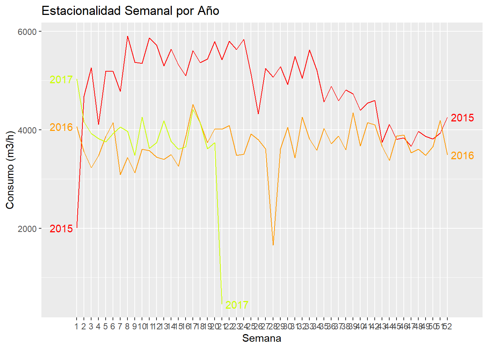

Capítulo 4 Pronosticos
4.1 Metodólogia Holter Winter
La metodología de Holt-Winters, también conocida como suavizamiento exponencial triple, es una técnica ampliamente utilizada en el análisis de series temporales para realizar pronósticos que presentan patrones de tendencia y estacionalidad. Esta metodología extiende el suavizamiento exponencial simple incorporando componentes adicionales que permiten capturar dinámicamente la evolución de la tendencia y la estacionalidad a lo largo del tiempo. Holt-Winters se presenta en dos variantes principales: aditiva y multiplicativa, dependiendo de la naturaleza del componente estacional. Es particularmente útil en contextos donde los datos muestran fluctuaciones regulares en intervalos específicos (como días, semanas o meses), y permite generar predicciones a corto y mediano plazo con un alto grado de precisión. Su implementación práctica ha demostrado ser eficaz en áreas como la economía, la meteorología, la gestión de inventarios y el consumo de recursos, como agua o energía(Hurtado Garzón 2013).
Teniendo en cuenta la fase de preprocesamiento, se observa que la serie transformada por el logaritmo (es decir no se uso la serie diferenciada que es estacionaria) presenta una estacionalidad visible, así como una tendencia definida, caracterizada por un comportamiento que decrece, se estabiliza y vuelve a decrecer. Esto indica que cumple con los criterios visuales necesarios para aplicar la metodología en cuestión. Además, el patrón estacional parece ser claro y repetitivo, lo cual sugiere la presencia de una estacionalidad aditiva. No obstante, al implementar el modelo, es importante considerar los residuos, ya que se identifican picos que podrían estar asociados a eventos atípicos o posibles errores de medición.
Cabe resaltar que esta metodología no requiere que la serie sea estacionaria. En cambio, se enfoca en identificar una tendencia y una estacionalidad bien definidas, ya que el pronóstico se basa en estos dos componentes junto con la media de la serie.
## RMSE: 0.7559494Se observa que los valores pronosticados se ajustan adecuadamente al comportamiento general de la serie; sin embargo, tienden a sobreestimar los valores reales.
4.2 Analisis de los Residuos
Examinaremos los residuos del modelo para evaluar si este ha logrado capturar adecuadamente la estructura subyacente de la serie temporal.
QQ-plot
Se observa
Prueba de Shapiro-Wilks
##
## Shapiro-Wilk normality test
##
## data: residuos
## W = 0.79869, p-value = 7.341e-08Los residuos no siguen una distribución Normal.
Autocorrelacion

El gráfico ACF de los residuos muestra que no hay autocorrelaciones significativas en los rezagos. Esto sugiere que los residuos son independientes en el tiempo, y por tanto, que el modelo ha logrado capturar adecuadamente la estructura temporal de la serie.
Homocedasticidad varianza constante
No se observa algun patron claro que indique que la varianza no sea constante, sin embargo se observa la presencia de valores atipicos.
En este sentido ya que no se cumple la normalidad en los supuestos se debe tener cuidado con las inferencias que se realicen sobre este modelo, sin embargo no afecta la aplicación ni los pronósticos hechos por el modelo.